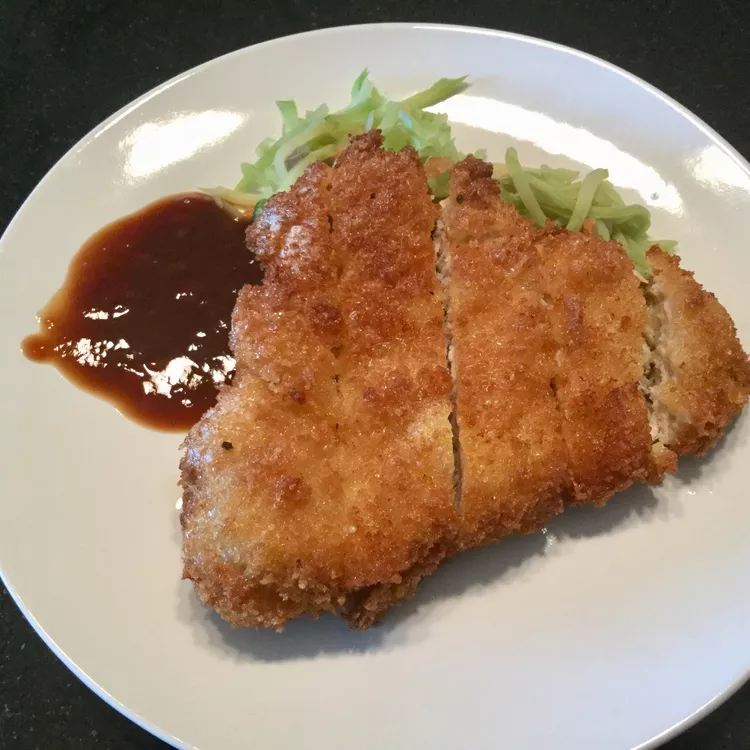

Tonkatsu

Description
This is using Panko, which is Japanese bread crumbs (really light and airy, more so than crackers), and thinly sliced boneless pork chops.
Ingredients
-
2 eggs
-
1 teaspoon milk
-
½ teaspoon minced garlic
-
salt to taste
-
½ teaspoon pepper
-
1 cup vegetable oil for frying
-
8 thin cut boneless pork chops
-
1 ½ cups panko crumbs
Steps
-
In a medium bowl, mix together the eggs, milk, garlic, salt and pepper. Heat oil in a large heavy skillet over medium-high heat. Place the panko crumbs in a shallow bowl.
-
Rinse pork chops with water, then dip in the egg mixture. Coat with panko crumbs, dip in the egg mixture again, then coat with another layer of panko crumbs. Lay coated chops on a plate until the rest are finished. If you have time, let them set for about 10 minutes, and the coating will set very well. If you wish to freeze the chops, now is the time.
-
When the oil is very hot, place pork chops into the pan, and fry for about 5 minutes on each side, until golden brown.